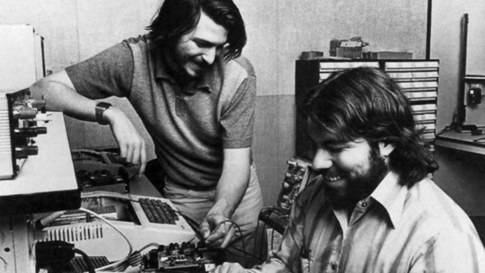

A vida de Steve Wozniak
Stephen Gary Wozniak, mais conhecido como Steve e para os mais próximos Woz, nasceu na Califórnia em 11 de agosto de 1950, filho de Margaret Louise Wozniak e do engenheiro da Lockheed Francis Jacob “Jerry” Wozniak. Apesar da confidencialidade do seu trabalho, foi com Francis que Steve herdou a curiosidade para montar e desmontar componentes eletrônicos e consequentemente se tornou autodidata e aprendeu a programar sem uso de computador e completamente sozinho. Desde criança Woz adorava pregar peças e chegou a ser preso por plantar uma falsa bomba e até expulso da universidade do Colorado após hackear o sistema para passar o trote.

Sua carreira
Antes de se tornar engenheiro e sem nenhuma formação acadêmica iniciou sua carreira na HP na criação das calculadoras científicas, onde conheceu Steve Jobs. Ambos se tornaram amigos e criaram um grupo de estudos e testes chamado Homebrew Computer Club. Nasceu então o Blue Box, um de seus primeiros projetos, que permitia fazer ligações sem custo algum para longas distâncias, mas sem muito sucesso. Ainda na HP, Wozniak “prototipou” o que no futuro seria o Apple I, usado em 1975 para gerar a primeira imagem por computador caseiro na televisão. Encorajado por Jobs a produzir o feito, Woz vendeu a calculadora e Jobs o carro e juntos criaram a Apple Computer Company.
Pós Apple
Depois de sair da Apple, Woz começou sua própria empresa, a CL9, onde fez um controle remoto universal. Já em 2001, Woz criou a tecnologia GPS utilizada para encontrar objetos, com o nome de Wheels of Zeus (WOZ). Além disso, tornou-se cientista-chefe da software Fusion-io cofundador da Comic Con do Vale do Silício. Apesar disso, Steve ainda recebe um salário simbólico pela lealdade com a Apple.